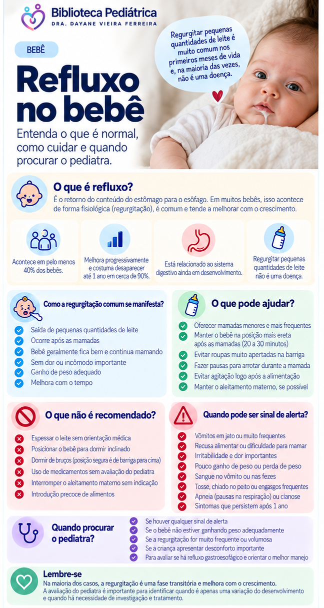

Refluxo no bebê
Golfadas são muito comuns nos primeiros meses. Veja a diferença entre refluxo fisiológico e doença do refluxo, o que observar e quando procurar avaliação.
Refluxo ou doença do refluxo?
Refluxo fisiológico
É a passagem do conteúdo do estômago para o esôfago, podendo aparecer como uma golfada. É frequente nos primeiros meses e tende a melhorar espontaneamente durante o primeiro ano.
Doença do refluxo (DRGE)
É quando o refluxo está associado a sintomas importantes ou complicações, como dificuldades alimentares, desconforto relevante ou prejuízo ao crescimento, exigindo avaliação médica.
É realmente tão comum?
Sim. A diretriz NICE informa que a regurgitação visível ocorre em pelo menos 40% dos lactentes. Geralmente começa antes das 8 semanas e, em cerca de 90% dos bebês afetados, desaparece antes de 1 ano.
O que os pais devem observar?
Mais importante que contar as golfadas é observar o bebê como um todo: se mama bem, está confortável na maior parte do tempo, ganha peso e não apresenta sinais de alerta.
E a posição para dormir?
O bebê deve dormir de barriga para cima. Não use posicionamento durante o sono como tratamento para refluxo. A recomendação de sono seguro deve ser mantida mesmo em bebês que regurgitam.
Quando conversar com o pediatra?
Procure avaliação quando as regurgitações vêm acompanhadas de dificuldade para mamar, recusa alimentar, sofrimento importante, baixo ganho de peso ou quando surgem de forma diferente do padrão habitual. Refluxo que começa tardiamente ou persiste além do período esperado também merece avaliação.
Sinais de alerta
Alguns sintomas não devem ser atribuídos simplesmente ao refluxo. Procure avaliação rapidamente diante de:
- vômito verde ou amarelo-esverdeado (bilioso);
- vômitos frequentes e em jato, especialmente em bebê pequeno;
- sangue no vômito;
- sangue nas fezes;
- abdome muito distendido ou doloroso;
- dificuldade importante para alimentar-se ou baixo ganho de peso;
- bebê muito abatido, com alteração importante do comportamento ou aparência de doença.
Perguntas frequentes
Toda golfada precisa de tratamento?
Não. Em bebês saudáveis, a regurgitação costuma ser fisiológica e tende a melhorar com o tempo.
Precisa fazer exames?
Na maioria dos bebês bem e com regurgitação típica, não. Exames são reservados para situações selecionadas.
Pode dormir inclinado?
Não use posicionamento do sono para tratar refluxo. O bebê deve ser colocado para dormir de barriga para cima, seguindo as recomendações de sono seguro.
Remédio para acidez resolve golfadas?
Medicamentos que reduzem a acidez não são indicados apenas por regurgitação isolada. A necessidade de tratamento depende da avaliação clínica.
Resumo visual

Fontes e revisão
SBP — Refluxo gastroesofágico (março/2025)
NICE — Gastro-oesophageal reflux disease in children and young people
Última revisão: setembro de 2026.